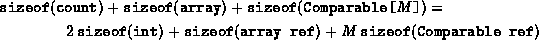
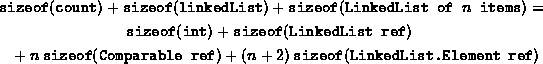

Data Structures and Algorithms
with Object-Oriented Design Patterns in Java
Data Structures and Algorithms
with Object-Oriented Design Patterns in Java
The running times calculated for the various
methods of the two ordered list implementations,
OrderedListAsArray and OrderedListAsLinkedList,
are summarized below in Table  .
With the exception of two methods,
the running times of the two implementations
are asymptotically identical.
.
With the exception of two methods,
the running times of the two implementations
are asymptotically identical.
| ordered list implementation | |||
|
| OrderedList- | OrderedList- | |
| method | AsArray | AsLinkedList | |
| insert | O(1) | O(1) | |
| isMember | O(n) | O(n) | |
| find | O(n) | O(n) | |
| withdraw | O(n) | O(n) | |
| get | O(1) | O(n) | |
| findPosition | O(n) | O(n) | |
| Cursor.getDatum | O(1) | O(1) | |
| Cursor.insertAfter | O(n) | O(1) | |
| Cursor.insertBefore | O(n) | O(n) | |
| Cursor.withdraw | O(n) | O(n) | |
The two differences are the get method and the insertAfter method. The subscripting operation can be done constant time when using an array, but it requires O(n) in a linked list. Conversely, insertAfter requires O(n) time when using an array, but can be done in constant time in the singly-linked list.
Table does not tell the whole story.
The other important difference between the two implementations
is the amount of space required.
Consider first the array implementation, OrderedListAsArray.
The storage required for an array was discussed in Chapter .
Using that result, the storage needed for an OrderedListAsArray
which can hold at most M Comparable objects is given by:

Notice that we do not include in this calculation that space required for the objects themselves. Since we cannot know the types of the contained objects, we cannot calculate the space required by those objects.
A similar calculation can also be done for the OrderedListAsLinkedList class. In this case, we assume that the actual number of contained objects is n. The total storage required is given by:

If we assume that integers and object references require four bytes each, the storage requirement for the OrderedListAsArray class becomes 12+4M bytes; and for the ListAsList class, 16+8n bytes. That is, the storage needed for the array implementation is O(M), where M is the maximum length of the ordered list; whereas, the storage needed for the linked list implementation is O(n), where n is the actual number of items in the ordered list. Equating the two expressions, we get that the break-even point occurs at n=(M-1)/2. That is, if n<(M-1)/2, the array version uses more memory space; and for n>(M-1)/2, the linked list version uses more memory space.
It is not just the amount of memory space used that should be considered when choosing an ordered list implementation. We must also consider the implications of the existence of the limit M. The array implementation requires a priori knowledge about the maximum number of items to be put in the ordered list. The total amount of storage then remains constant during the course of execution. On the other hand, the linked list version has no pre-determined maximum length. It is only constrained by the total amount of memory available to the program. Furthermore, the amount of memory used by the linked list version varies during the course of execution. We do not have to commit a large chunk of memory for the duration of the program.
 Copyright © 1998 by Bruno R. Preiss, P.Eng. All rights reserved.
Copyright © 1998 by Bruno R. Preiss, P.Eng. All rights reserved.